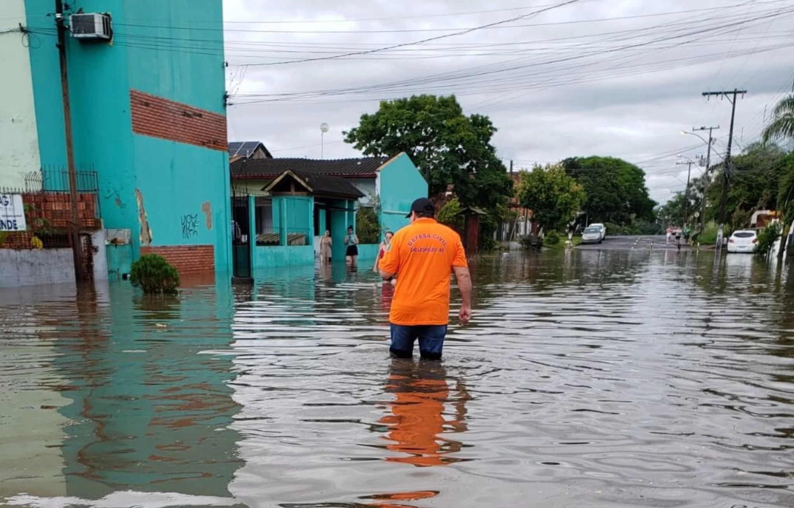

GERAL DO POVO
menu
Notícias
Variedades
Charges e tirinhas
Coluna de opinião
Sobre
Foodtech, o futuro da alimentação?
Reintegração de Ex-Detentos: Desafios e Oportunidades no Mercado de Trabalho
Porque a ODS 7 é tão importante?
Chuvas Fortes em São Leopoldo.
